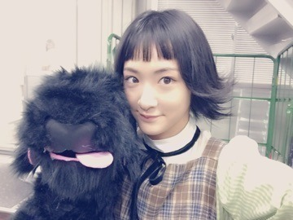
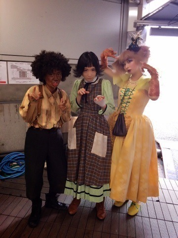

| 2015/10 15 Thu | またひとつ学んだ。 |
気持ちがわふわふしていたよ〜ヽ(・∀・)ノ
腰が珍しくずっと痛いよ〜ヽ(・∀・)ノ
湿布くさいよ〜ヽ(・∀・)ノ笑笑
そんな事から始まりましたいこまブログ

10月12日に千秋楽を迎えました
いこまは初舞台でした
すべての犬は天国へ行く

メリィを演じました。
自分より年下のちょっと頭が足りない女の子。
この前髪もきっとメリィが自分で切ったのでしょう。
今回の舞台は私みたいな人がやるにはまだまだレベルの高いお話しでした。
ですが、
すごくこの舞台に立ててよかったって心から思います。
素晴らしい女優の皆様、
稽古しているだけで勉強になりました。アドバイスをいっぱいもらいました！
アンサンブルの皆様にいっぱい教えてもらいました。
演出の堤さんから役者としてのいろんなお話しをしていただいたり、指導してくださったり。
スタッフの皆様に沢山支えて頂きました。
また舞台に立ちたいと思いました。
今回、様々基礎の第一歩を学んだと思います。
難しい事にチャレンジするって面白い！！
まだまだまだまだ私はレベル低いっ！！
だからこそ挑戦しなければならないのね！！
頑張りますヽ(・∀・)ノ
観に来てくださったすべての皆様本当にありがとうございました。

アホ組

キャストの皆さんと仲良くなった分、
会えなくて寂しい。。
全然気持ちが整理できなくてブログを書きたいのに言葉が溢れすぎて困っていました

犬組みメンバーお疲れ様
またごはん行こうねっヽ(・∀・)ノ
最近は、今期のアニメにきゅんきゅんパラダイスでございます

ダンデビはもう３０分間悶絶してるからね、
このトキメキをどこに放出すればいいのか分からなくてとりあえず『ふぁっ』って言ってます。
ディアラバのDVD-BOX予約しました

って当たり前よね。
相変わらずオタクしてます♪
今週の握手会はハロウィンの亡霊ちゃんになって出ますので、来てくださる皆さんも是非ハロウィン仮装でお願いします〜(///￣(工)￣///)
前髪パッツンアレンジ難しい

へばなっ☆彡
コメント(456)
2015/10/15 21:42